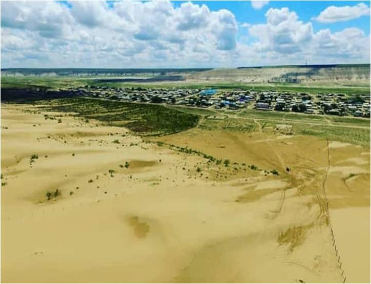

Сенек ауылы
Сенек — Маңғыстау облысы, Қарақия ауданындағы ауыл, аттас ауылдық округ орталығы
Халқы
Тұрғыны:
1769 адам (885 ер және 884 әйел адам) (1999);
2038 адам (1016 ер және 1022 әйел адам) (2009).
2070 адам (2015);
Ауыл шаруашылығы
Ауыл бойынша шаруа қожалықтары мен жеке тұрғындардың есебіндегі
барлығы 309 мүйізді ірі қара, 7225 қой-ешкі, 1934 бас жылқы,
976 бас түйе тіркелген. Сенек бойынша 25 шаруа қожалығы жұмыс істеуде.
Денсаулық пен білім саласы
Сенек ауылында амбулатория жұмыс жасауда.
Сенек ауылы бойынша мектепке дейінгі бала саны 428-ді құрайды, оның 50-і «Шұғыла» балабақшасында тәрбиеленуде.
Ауыл тарихы.
Сенек ауылының атауы көптеген деректерде кездесіп отырады. Ауыл үлкендерінің пікірінше
Сенек атауы түрікмен халқының «шыбынды» атауынан шыққан деп айтылады.
Құдық суының тұщылығы да кей тақырыптарда өзек болған.
1873 жылы Берлин қаласынан шыққан әскери атташе Гуго Штуммның «Хиуға жорық»
кітабында 1873 жылы 17-20 апрельде Сенек құдығының басында полковник Ломакинге
қарасты №ІV Кендірлі қолының (2 бөлім жаяу әскер, Казактардың 2 жүздігі және 40 түйе) 3 күн аял жасағанын суреттейді.


Шопан ата
Қорым – Батыс Қазақстан жеріндегі көне (XII-XX ғасырларға) сәулет өнеріне жататындардың ең үлкені. Ол Қазіргі Маңғыстау облысынағы Сенек деп аталатын ауылдың солтүстік-шығысынан әрі 25 шақырымдай жерде жатыр. Шопан ата аңыз бойынша Қожа Ахмет Яссауидің шәкіртті болған екен. Бір күні ұстаз Яссауи барлық оқушыларын шақырып алып, садақ тартқызады. «Садақ оғы қайда түссе, сол маңға мешіт салыңдар» деп тапсырады шәкірттеріне. Содан Шопан ата оғын таудың етегінде орналасқан малға бай ауылдың маңынан табады да, сол ауылға бақташы болып жалданады. Ақыры осы жерден ұстазының айтуы бойынша жер асты мешітін салдырады. Мешіттің жанында қыстаулар мен құдықтар, сол секілді Ұлы Жібек жолының бірі Маңғыстау мен Хорезмге дейінгі керуен өтеді. Бұл қасиетті нысан тек қазақтардың емес, қарақалпақ пен түрікмен халықтарының аса құрметтеген жері болған.
Шопан ата қорымы осында тұратын халықтардың салт-дәстүрін көрсететін діни сәулетті құрылыс ретінде тұрғызылған. Қорым Орал-Каспий аймағындағы жер көлемі жағынан ең ірісі, сондай-ақ мұнда екі мыңнан астам ескерткіштер бар. Олар қазақ және түрікмен қорымдары деп екіге бөлінеді.
Оның орталығында әк тастан қашалып тұрғызылған бірнеше бөлмелі мешіт тұр. Ал мешіттің ауласында киелі саналатын тұт ағашы мен жуынатын тас суат орналасқан. Шопан ата қорымының солтүстік-шығысына қарай михраб, құжыралар мен намаз оқуға арналған жайлар, шығысында күмбезді кесене, қойтастар мен сандықтастар, сол сияқты алыстан көзге ұрылатын сағанатамдар бар. Бұл ескерткіштер әктас пен құмтастардан қашалып, әр түрлі өрнектермен сәнделген.
Мешіт осы өңірдегі Шақпақ ата, Бекет ата мешіттері секілді жер асты деп атауға лайық. Себебі, үстіңгі бөлігі осында орналасқан ескерткіштердің табанына барып тіреледі.
Мешіттің солтүстік-батысына қарай барлық аумақты негізінен түрікмендердің қойтас түріндегі өңделген тас тақталар, көне қабырғалар, стелалар алып жатыр. Бұлардың арасынан құмтастардан тұрғызылған қабырғалалар мен саркофактар көне сәулетімен дараланып тұр. Ал батыс бөлігінде қазақ руларының таңбалары салынған стелалар мен бекіре пішіндес құлпытастарды жиі ұшыратасыз.
Мұндағы жерлеу құрылыстары сәулеттік пішіні жағынан сан түрлі болып келеді. Олар көлемі, тегістігі жағынан, ою-өрнегімен ерекшеленіп тұрады. Бұлардың арасынан оңтүстікке қаратып кесенелер секілді салынған сағанатамдар басымырақ және олар басқалардан ерекше салынған.
Шопан ата қорымын 1952 жылы Малбағар Мендіқұловтың басқаруымен сәулет экпседициясы кезінде зерттеле бастады. Ал 1977-78 жылдары бұл нысанды Қазақ КСР мәдениет министрлігі, 1982 жылы тарих пен мәдениет ескерткіштерін қлрғайтын республикалық қоғам арнайы зерттеу жұмыстарын жүргізді. Сол жылы қорым мемлекеттік қорғауға алынып, бүгінде Қазақстанның 100 киелі нысандарының қатарынан табылып отыр.
Қорымға сыйнып келетіндер мен қатар, саяхатшылар да жетерлік.
жатыр. Ал өзі XIII ғасырда тұрғызылған делінеді. Қараман ата жайында бірнеше аңыздар бар. Оның бірінде Шопан ата інісі ретінде айтылса, кей ғалымдардың дерегінде Балқан түбегінен түрікмендерді Маңғыстауға бастап келген ірі бекетрдің бірі болған делінеді. Жалпы, Қараман ата ислам дінінің суфизм бағытын таратушысы ретінде танылған діндар. Десек те, кей авторлар атаны жағымсыз кейіпкер ретінде көрсеткен аңыздарды таратады. Мәселен, М.Мирзаевтың кітабында қарақалпақтың мынандай бір әңгімесі жазылған. Қараман атты адам жегіш, жалғыз көзді алып болыпты. Ол Есім батырдың жолын кесіп, алдап, ажал апанына түсіріпті. Осы халықтың арасында Қараман «Шық бермес, Шығайбай» секілді сараң бай болғаны жайында тағы бір аңыз бар.
Масат ата Маңғыстау өлкесіне сонау Хорасандағы Мешхед атты қаладан келген екен.